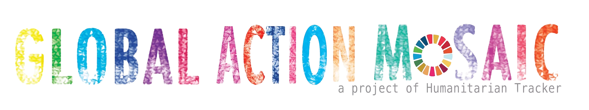
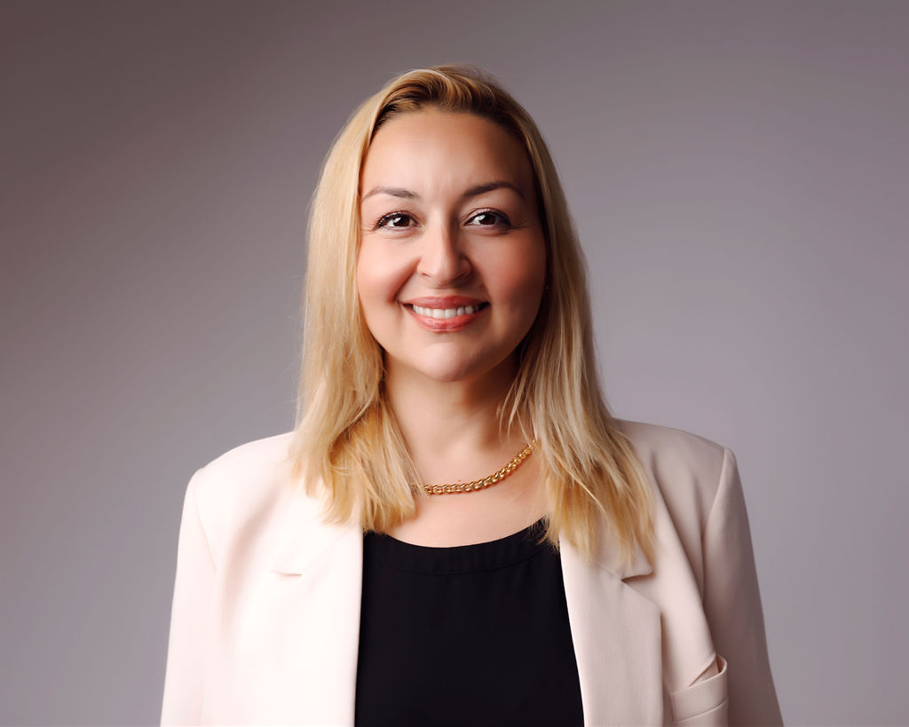
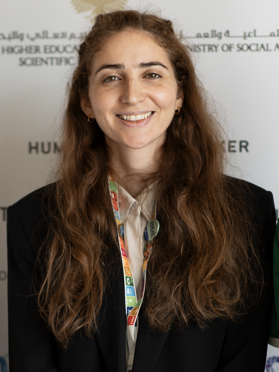

◎
01 / WORLDWIDESustainable
Development Goals
Place your initiative within a shared global framework for people and the planet.
Map an SDG project ↗Technology. Crowdsourcing. AI for social good.

Dashboard figures · Last verified November 16, 2026 · View dashboard ↗
Humanitarian Tracker empowers citizens to turn local knowledge into lasting impact. We use crowdsourcing and AI across humanitarian reporting, global health, education, and sustainable development. Our AI-enhanced platform, Global Action Mosaic, helps community-led initiatives gain visibility, share knowledge, and connect with impact projects worldwide. We are a U.S.-based 501(c)(3) nonprofit in consultative status with the UN Economic and Social Council, with no political or religious affiliation.
Explore community-led projects around the world.
Share your project through the track that fits your work.
Place your initiative within a shared global framework for people and the planet.
Map an SDG project ↗Bring community initiatives, recovery efforts and local knowledge into the same conversation.
Map a Syria project ↗Make the work happening close to home part of a much wider movement.
Map a Washington project ↗Select a goal to explore its focus, then discover the United Nations’ targets and resources.
Explore the goal and the ways local action can contribute to a more equitable world.
Explore Goal 1 at the UN ↗
Founder and Executive Director
Detail-oriented leader with domestic and international experience working with organizations including the World Health Organization, World Food Program, UNICEF & USAID in resource mobilization, technology innovation, and public diplomacy.

Director, Global Action Mosaic
Safaa is a seasoned professional and boasts over a decade of invaluable experience in the humanitarian sector, primarily in the Middle East. Her passion lies in championing human rights and driving improvements in policies and procedures to advance social protection and equal opportunities in various contexts.

Senior Advisor to Humanitarian Tracker · President & CEO of Leadership Eastside
Jeni’s interests lie in exploring the intricacies of adaptive leadership and using the power of connections and the process of discovering shared vision to build engaged communities. Jeni holds a master's degree in Organization Systems Design with a focus on Leadership and Community Engagement from Seattle University and a Bachelor of Arts in English from Whitman College.
Software Engineer
A University of Washington double major in software engineering and Japanese literature, Austin architected and built the GAM dashboard and GAM Intelligence end to end, and leads the engineering work to extend its AI capabilities.
Web Developer
Mina is architecting and building the new Humanitarian Tracker website from the ground up, with the GAM map and dashboard embedded.
Select a photo to view it in full.
In collaboration with Open Data Watch and PARIS21
For more than a decade, we have worked to turn community knowledge into actionable insights. Our data has been used by UN agencies, the U.S. State Department, and major media outlets, and we are proud to bring this work to the Commit to Data community, the action platform of the UN World Data Forum.
If the video doesn’t play here, open it on Google Drive using the link above.
Explore the projects, research, and conversations that shaped the mosaic. A living collection of local voices reaching the world.
Explore the archive ↗